A free web app that helps every Texas school follow the new UIL heat rule for outdoor athletics and marching band: plan the practice, run the 30-minute rechecks, hear from athletes early, act fast in an emergency, and keep the record.
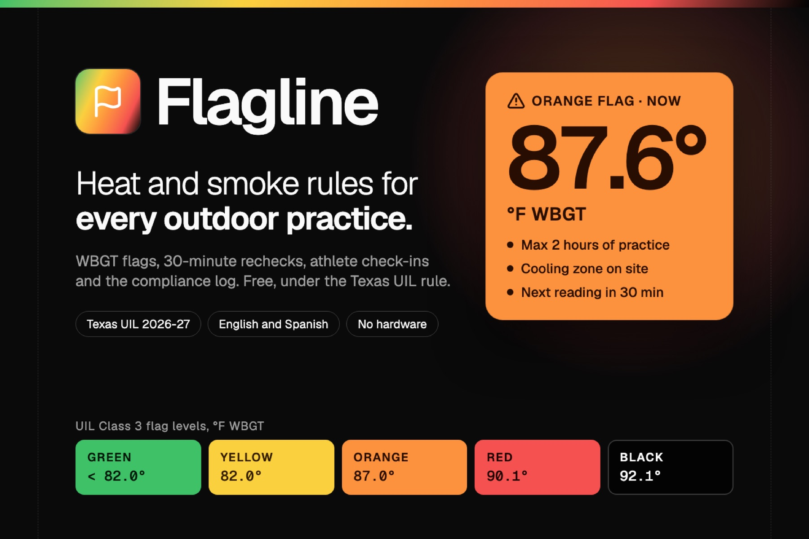
From August 1, 2026, Texas UIL requires a wet bulb globe temperature (WBGT) reading before and every 30 minutes during every outdoor practice and marching band rehearsal, with limits on time, breaks and football gear at each flag level. Coaches and band directors, not trainers, usually run it. Paid systems cost hundreds to thousands of dollars per site. Exertional heat stroke is the leading preventable cause of death in high school football.
Flagline, a free, bilingual (English and Spanish) web app with no hardware and no accounts. It shows the flag now and for the next 7 days, answers plain-language plans, runs Practice Mode with timers and a meter photo reader, routes athlete check-ins with red-flag alerts, guides the heat stroke protocol and logs everything.
The safety core is deterministic code: a real physics model (Liljegren WBGT) checked against 288 reference cases, UIL thresholds stored as versioned data with a conformance suite, 442 automated tests. AI only interprets language and photos, gated on confidence. It never sets a flag level, a limit, or clears an athlete.
Live in production at flagline.codewitheugene.top with a fictional demo team. Every feature in this dossier marked built works today on the live site. Open source under MIT.
Every afternoon from August to October, someone decides whether and how a team practices in dangerous heat. The right measure is WBGT, which combines air temperature, humidity, wind and sun. It is not the number on a weather app.
A 15-year-old Lancaster (Dallas area) player died of heat stroke in August 2025 after conditioning in a non-air-conditioned facility. An Austin Bowie High School player spent time in the ICU after heat stroke in a 2023 game. Band is at risk too: about 400 marching band members with exertional heat illness were reported in the news from 1990 to 2020, with no national band standard, and a university band member died after collapsing at a 91 F game on September 5, 2026.
A record 8,266,244 US high school students played sports in 2024-25 (NFHS). Texas joins at least 17 other states that require WBGT-guided practices, and states have adopted nearly 200 heat-illness prevention policies since 2017. Parents estimate their kids lost about a week of practices and games in 2024 to heat, smoke and other weather.
| Person | Their day | What hurts today |
|---|---|---|
| Head coach | Teaches all day, runs practice 3:45 to 6:00 pm for 60 to 120 athletes | Checks a weather app and guesses; forgets 30-minute rechecks when practice gets busy; no records |
| Band director | Rehearses 150+ students on a hot parking lot, 4:00 to 7:00 pm, Sep to Nov | UIL rules now cover band; band culture is less used to heat protocols; often no trainer on site |
| Athletic trainer | One trainer for several sports on several fields | Cannot be at every field; needs every field's status and every athlete red flag in one place |
| Athletic director | Oversees compliance for a campus | Needs evidence that every practice followed the protocol |
| Student athlete | 14 to 18 years old, practicing in the heat | Pressure not to complain; no private, low-friction way to say “I feel wrong” |
| Parent | Gets cancellation texts | No view of the conditions or the reasons behind decisions |
| Step | What should happen | What actually goes wrong |
|---|---|---|
| Planning | Know the expected flag and move practice or change gear | Weather apps show air temperature or heat index, not WBGT |
| Pre-practice | A reading within 15 minutes before the start | Nobody owns it; skipped or taken in the wrong spot |
| Applying the rules | Right class (Class 2 or 3), right row, gear and cooling limits | Wrong class, wrong row, gear limits forgotten |
| During practice | A reading every 30 minutes; switch to stricter rules at once | Forgotten in the flow of coaching 100 teenagers |
| Warning signs | Recognize early; cool first, then call 911 | Late recognition; transport before cooling |
| Records | Keep WBGT records on file | A clipboard lost in a locker room, or nothing |
| Smoke days | Check AQI in the same decision | A separate app, often not checked |
| Flagline | UNC WBGT forecast (UIL recommends) | Zelus WBGT | Perry Weather | Kestrel 5400 meter | |
|---|---|---|---|---|---|
| Price | Free | Free | $49.99 to $299 per year (free tier ended Jun 2026) | About $3,500 per site per year | $549 to $629 |
| Hardware | None (meter optional) | None | None | Required | Is the hardware |
| WBGT source | Two independent forecasts plus on-site readings | Forecast twice daily | Proprietary; read 2 to 3 C cool when hot (KSI 2025) | On-site sensor | Measured |
| Exact UIL Class 2 and 3 rules | Yes, tested | Plot bands; banner labels mismatch | Selectable | Yes | No |
| Sport outputs (football gear, band) | Yes | No | Partial | Partial | No |
| Practice workflow and timers | Yes | No | Partial | Alerts | No |
| Log of readings and decisions | Yes, free (CSV) | No | Paid tier | Paid tier | With kit |
| Air quality in the same view | Yes | No | Top tier | Add-on | No |
| Athlete check-ins and red flags | Yes | No | No | No | No |
| Heat stroke protocol | Yes, with cooling timer | No | No | No | No |
| Plain-language planning | Yes (TypeSafe Jev) | No | No | No | No |
| English and Spanish | Yes | No | Unknown | Unknown | No |
For Texas high school coaches and band directors who must follow the new UIL heat rule without a trainer at every practice, Flagline is a free web app that turns the WBGT forecast and on-site readings into a practice plan, a recheck routine and a record. Unlike the free UNC forecast, Flagline runs the practice. Unlike paid systems, it needs no hardware and no budget.
Not built for professional or college programs with full sports medicine staffs, individual outdoor workers (OSHA and NIOSH tools exist), or anyone expecting a medical diagnosis.
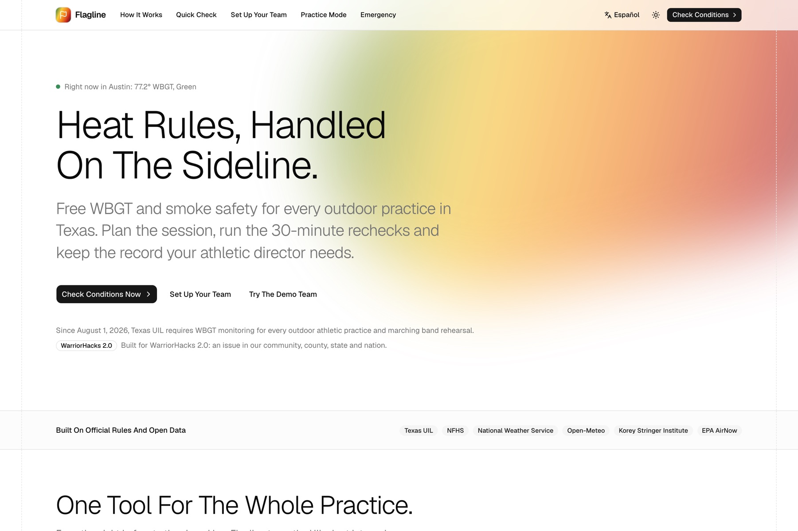
Home. The live Austin flag, the promise in one line, and three ways in: Check Conditions, Set Up Your Team, Try The Demo Team. Built on official rules and open data (UIL, NFHS, NWS, Open-Meteo, KSI, EPA AirNow).
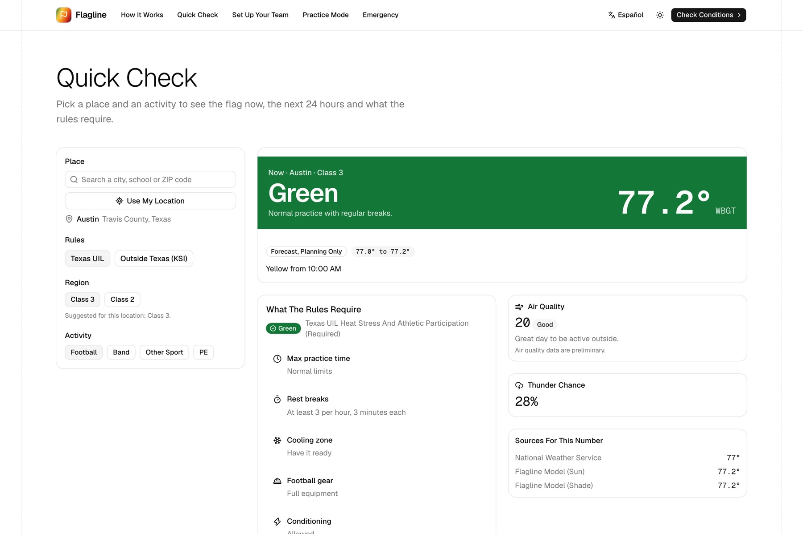
Quick Check. Pick a place and an activity. Flagline shows the flag now, the next 24 hours and exactly what the rules require, with air quality, thunder chance and the sources behind the number. It suggests the right UIL class for the location, and uses KSI categories outside Texas.
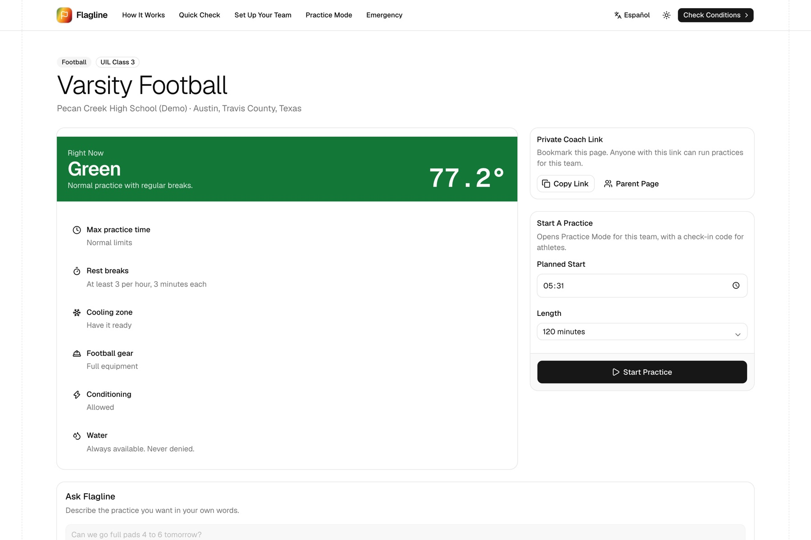
Coach dashboard. A team gets a private coach link (no accounts). Today's flag and requirements, a one-tap Start Practice, and a parent page.
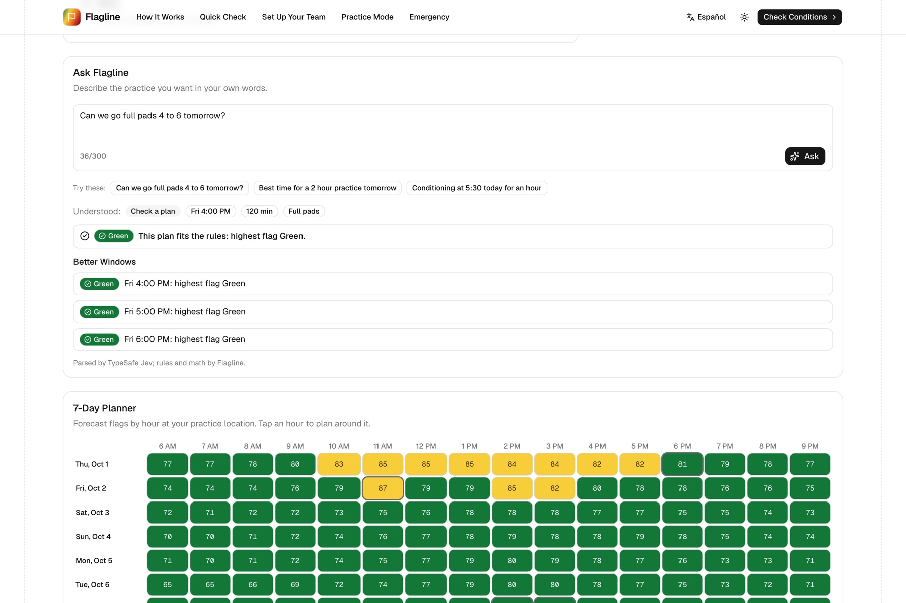
Ask Flagline and the 7-day planner. “Can we go full pads 4 to 6 tomorrow?” TypeSafe Jev reads the intent, gear and times; the deterministic rules engine checks the plan hour by hour and suggests better windows. The planner shows every practice hour for a week.
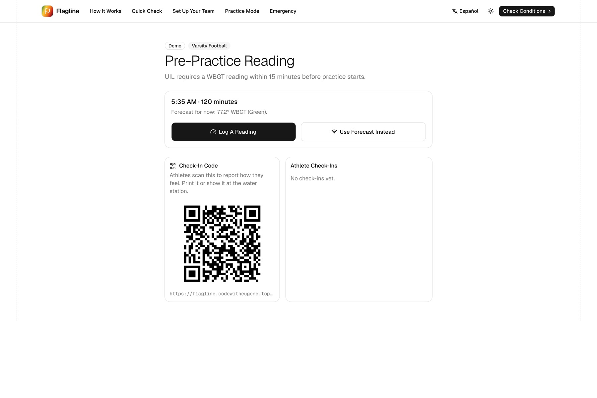
Pre-practice reading. UIL requires a reading within 15 minutes before practice. One tap to log a meter value or use the forecast, with a QR code athletes can scan at the water station.
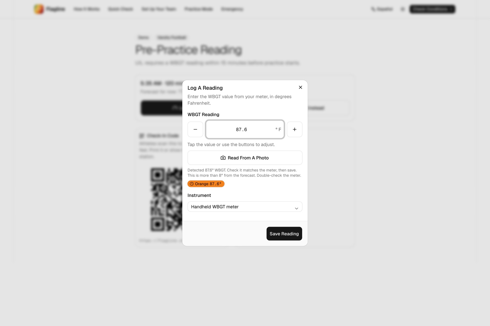
Meter photo. A vision model transcribes the display, Jev picks which number is WBGT (even when the screen shows several), code checks the range and warns when it is far from the forecast. The coach always confirms before saving.
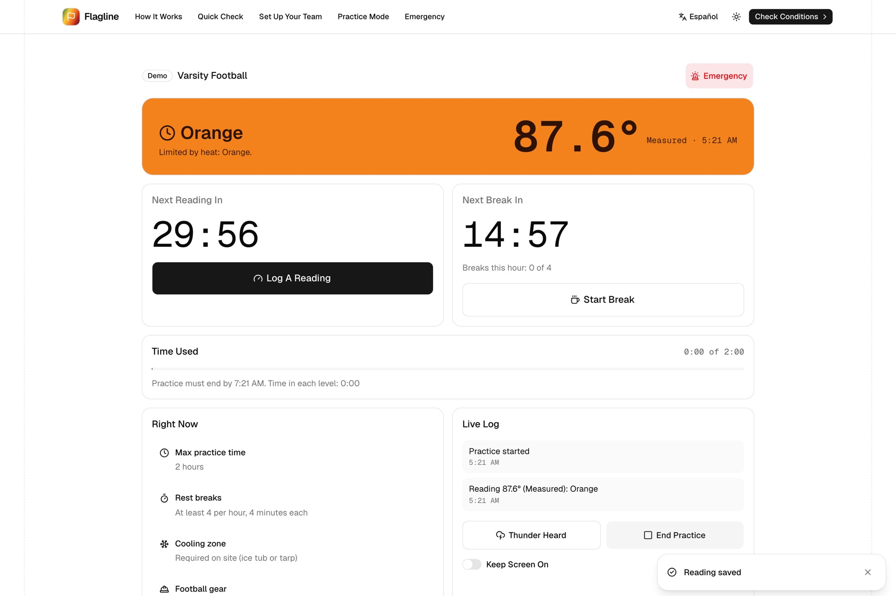
Practice Mode. Orange flag at 87.6 F: two hours maximum, four breaks of four minutes every hour, cooling zone required. A countdown to the next reading, a break timer, time used against the limit, a thunder hold and a live log.
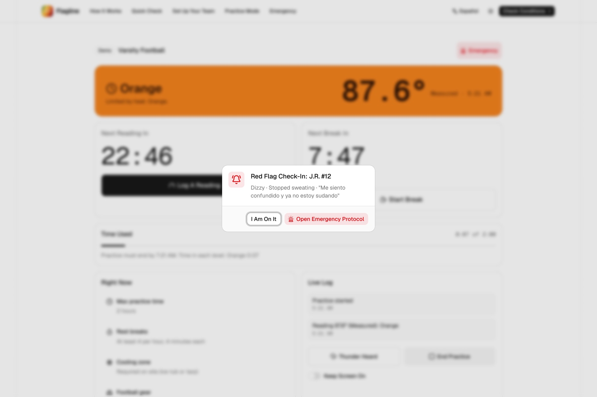
Red flag alert. When an athlete reports a red flag, the coach's screen interrupts with the message and one tap to the emergency protocol.
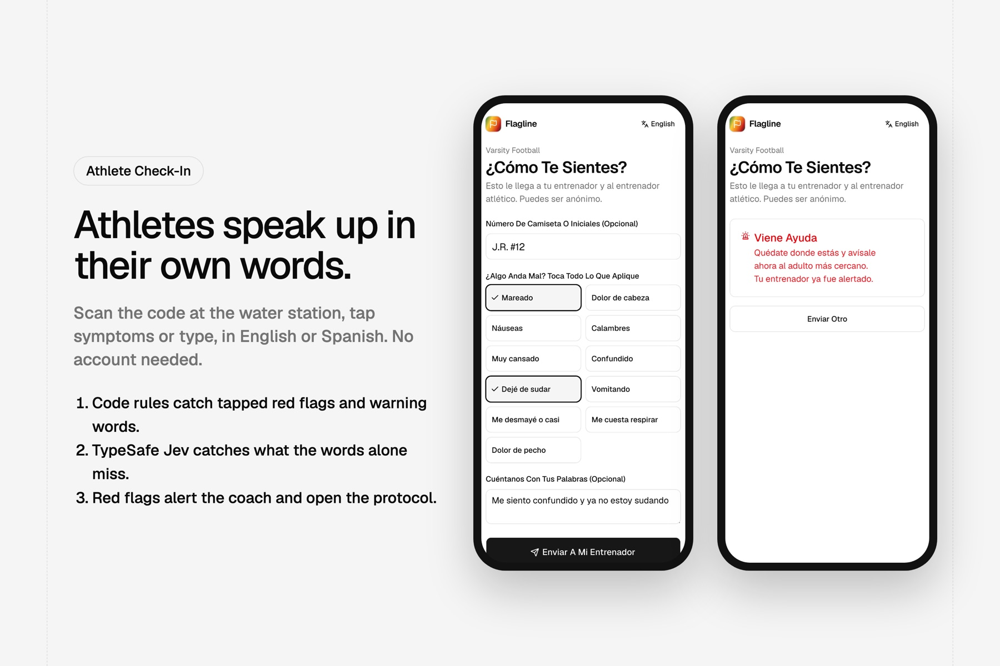
Athlete check-in. No account. Tap symptoms or type, in English or Spanish. “Me siento confundido y ya no estoy sudando” (I feel confused and I have stopped sweating) routes to Emergency in seconds, caught both by our keyword rules and by Jev.
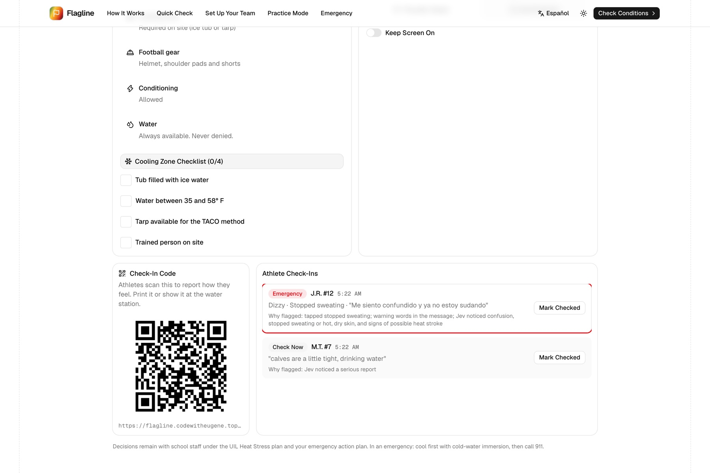
Queue. Open emergencies first, with plain-language reasons for each flag.
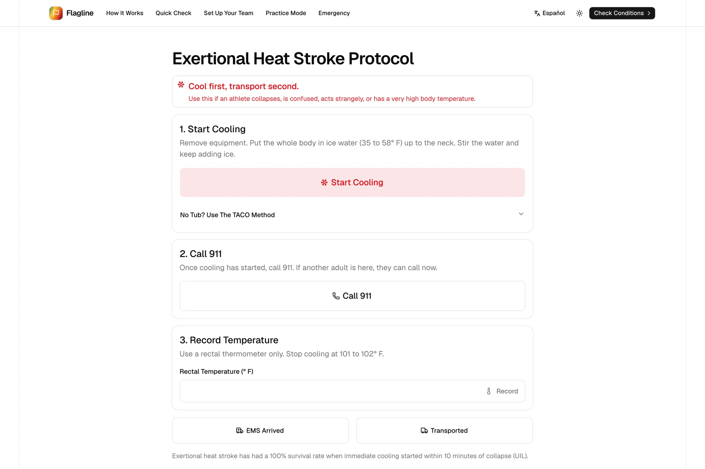
Protocol. Cool first, transport second: a cooling timer, Call 911, temperature log, EMS times.
Next.js 16 (App Router, Turbopack) · React 19 · TypeScript · Tailwind CSS v4 · pure shadcn/ui (base-nova on Base UI) · Zod 4 · next-intl (English and Spanish) · Recharts · chrono-node · Drizzle ORM with Neon Postgres · TypeSafe Jev via @typesafe-ai/sdk · OpenRouter vision (Kimi K3) · Vitest · Vercel hosting behind Cloudflare · pnpm.
Outdoor WBGT = 0.7 × natural wet bulb + 0.2 × globe + 0.1 × air. We ported the Liljegren et al. (2008) model from ECMWF's open-source thermofeel library to TypeScript, including the globe and natural wet bulb solvers, 2 m wind adjustment and NOAA solar geometry. It matches 288 reference cases generated from the original implementation. On a late-September Austin afternoon: air 97 to 99 F, heat index 100 to 107 F, WBGT 85 to 88 F.
| Level | Class 3 (most of Texas) | Class 2 (Panhandle, South Plains) | What the rules require |
|---|---|---|---|
| Green | < 82.0 | < 79.7 | Normal activities; at least 3 rest breaks each hour, 3 minutes each |
| Yellow | 82.0 to 86.9 | 79.7 to 84.6 | Discretion for intense or prolonged exercise; 3 breaks of 4 minutes each hour; cooling zone required |
| Orange | 87.0 to 90.0 | 84.7 to 87.6 | 2 hours maximum; football in helmet, shoulder pads and shorts (pants allowed if reached mid-practice); 4 breaks of 4 minutes each hour |
| Red | 90.1 to 92.0 | 87.7 to 89.7 | 1 hour maximum; football: no protective equipment and no conditioning; 20 minutes of breaks across the hour |
| Black | ≥ 92.1 | ≥ 89.8 | No outdoor workouts; delay until cooler |
Korey Stringer Institute regional categories (Grundstein et al. 2015) apply anywhere else, with Category 1 as the most protective default.
Instead of prompting a chatbot and parsing its words, Flagline asks TypeSafe Jev typed questions (Choice, Noul probabilities and Scores) with confidence values our code can gate on. AI handles only what code cannot: understanding people and photos.
Jev screens free text for 8 red flags (confusion, collapse, vomiting, stopped sweating, severe headache, seizure, breathing, chest pain) plus severity and category, in one request.
Routing is recall-first and deterministic: any tapped red flag, an English or Spanish keyword, a red-flag probability ≥ 0.25, severity ≥ 3.0 or “possible heat stroke” goes to Emergency. AI can raise a flag, never clear one.
A date parser proposes start times and lengths (“4 to 6 tomorrow” means 4 PM; “about 2 hours” is a length). Jev picks intent, gear, conditioning and the right candidate in one request.
Below 0.6 confidence the app asks instead of guessing. The rules engine then evaluates the plan hour by hour and finds better windows.
A vision model (Kimi K3 via OpenRouter) only transcribes the numbers and labels on the display. Jev picks which number is WBGT.
Code converts Celsius, rejects values outside 40 to 120 F, warns when more than 8 F from the forecast, and the coach confirms. Photos are read once and never stored.
| Eval | Result | What it means |
|---|---|---|
| Red-flag triage, 25 messages (English and Spanish) | 25/25 routed to Emergency | 100% recall, the bar we set; 8 of them were caught only by Jev, not by keywords |
| Routine messages, 8 | 0/8 false alarms | Recall-first without crying wolf on cramps or tiredness |
| Meter photos, 4 screens | 4/4 read correctly | Including several readings on one screen, a Celsius display and a blurred, tilted dark screen |
| Ask Flagline parsing | Unit tested edge cases | PM inference, duration phrases, same-day times, Spanish dates, intent settled by a stated time |
| Hazard | Controls |
|---|---|
| App shows a lower level than reality | Higher of two forecasts; borderline flag within 1 F; forecast labeled planning only; on-site reading prompted before and every 30 minutes; the measured reading drives the rules |
| A rule encoded wrongly | Rules are versioned data with source links; conformance tests on every boundary; a threshold change needs a source and a passing test |
| Missed recheck | Big countdown, overdue state, synced practice for staff, logged |
| An athlete's red flag not escalated | Tapped red flags bypass AI; keyword backstop in two languages; recall-first thresholds; 100% recall eval; the app never clears a flag |
| Transport before cooling | The protocol leads with cooling; Call 911 after cooling starts; large type; bilingual |
| Over-trust | Never says “safe”; the coach confirms; copy frames the app as support for school staff |
| Misread meter photo | Range and forecast checks; the coach confirms; manual entry always available |
Flagline is not a medical device and does not diagnose illness. It does not replace an athletic trainer, an on-site WBGT instrument or emergency services. Decisions remain with school staff under the UIL heat plan and the school's emergency action plan.
| Area | Checks |
|---|---|
| Heat physics | Globe and natural wet bulb solvers, 2 m wind, solar zenith, sun and shade WBGT against the reference fixture |
| UIL and KSI rules | Every threshold edge for Class 2 and 3, KSI categories, requirements by level and sport, mid-practice gear, borderline detection |
| Conditions | NWS duration parsing and unit conversion, Open-Meteo parsing, two-source combination, reverse geocoding |
| Practice state | Readings, starts, breaks per hour, level changes, thunder hold, cooling, end, CSV log |
| Planning | Plan evaluation hour by hour, best windows, date and duration parsing, intent gate |
| AI routing | Triage thresholds, keyword lists in English and Spanish, third-party distress, meter transcription and selection |
| Check-in queue | Emergencies first, newest first within a level, readable reasons |
| Messages | English and Spanish keys match; every key the app asks for exists; no em or en dashes in copy |
pnpm eval:triage · pnpm eval:ask · pnpm eval:meter. Results are on page 14. Rule thresholds can only change with a source and a passing conformance test.
Every UIL member high school and junior high with outdoor athletics or a marching band, starting with the schools that have no trainer at every practice and no hardware budget. Nationally, 8.27 million high school athletes and the 17+ states that already require WBGT-guided practices.
| Outcome | Metric | How |
|---|---|---|
| Faster, correct planning | Time from opening to the practice plan (target under 10 s) | Privacy-preserving product analytics |
| Compliance | Rechecks on time; modifications confirmed | Practice logs |
| Earlier symptom reporting | Check-ins per practice; time to adult response | Anonymous check-in records |
| Fewer lost practices | Practices moved instead of cancelled | Planner and log |
| Safety | Cooling started within 10 minutes in any incident | Incident records, if any |
Long term: fewer heat illnesses and zero heat deaths in participating programs. That cannot be shown in two weeks, and we say so.
Forecasts are cached by grid cell and coordinates, so every team at a school shares the same calls.
A life-safety problem with official, current evidence; a brand-new mandate in the judges' own state; a named audience (every Texas school with outdoor athletics or band); equity for schools without trainers or budgets; a nation-wide path.
Already live on free infrastructure with free public data, no hardware and no accounts. Under $30 per month for dozens of schools. A clear pilot and adoption plan; rules for new states are data.
One glanceable flag with text, not color alone; a big recheck timer; a five-second reading by keypad or photo; plain-language planning; English and Spanish; sunlight mode; 44 px targets; the athlete form needs no account.
A ported physics model with 288 reference cases; a typed, tested rules engine; two-source uncertainty; confidence-gated typed AI with deterministic backstops; synced practices; 442 tests and live evals.
| Scale | How Flagline serves it |
|---|---|
| Community | The teams, bands and families of Austin, starting with the fictional Pecan Creek High School demo team |
| County | Travis County schools, where late-September afternoons still reach orange and red WBGT |
| State | Texas made WBGT monitoring mandatory for every outdoor practice and marching band rehearsal from August 1, 2026; Flagline implements the exact UIL rule, Class 2 and Class 3 |
| Nation | At least 17 other states require WBGT-guided practices; Quick Check already works anywhere with KSI categories, and new states are a data task |
| Date | Milestone |
|---|---|
| Sep 25 | Research and planning documents only (challenge, problem, solution, build spec, sources). No application code before the theme reveal. |
| Sep 27 | Theme revealed; Flagline confirmed by our theme-fit protocol (Jev rated it 3.77 of 4, the highest of five candidates). |
| Sep 28 | Scaffold (Next.js 16, shadcn/ui base-nova); WBGT physics, UIL rules engine, two-source conditions; Home, Quick Check, Practice Mode, Emergency. |
| Sep 28 to 29 | Teams, synced Practice Mode, athlete check-ins with Jev triage, Ask Flagline; deployed to production with a custom domain. |
| Sep 30 | Meter photo reading; worldwide location with reverse geocoding and fix accuracy. |
| Oct 1 | Polish from end-to-end testing: queue ordering, readable flag reasons, accessibility fixes, message-key test; submission media and demo video. |
Claude Code assisted with writing code and documentation. In the product, TypeSafe Jev makes typed judgments (triage, plan parsing, meter value selection) and Kimi K3 via OpenRouter transcribes meter photos. The demo video was assembled with OpenMontage and Remotion, narrated by a synthetic voice (Microsoft en-KE Chilemba).
WBGT method: Liljegren et al. (2008), ported from ECMWF thermofeel (Apache-2.0). Weather: National Weather Service (public domain) and Open-Meteo (CC BY 4.0). Place names: OpenStreetMap contributors. UI: shadcn/ui, lucide icons, Geist fonts. Music: Pixabay Content License. Flagline is MIT licensed.
Planning documents were written before the theme reveal; all application code was written during the event. Demo data is fictional; no real minors' data appears anywhere.